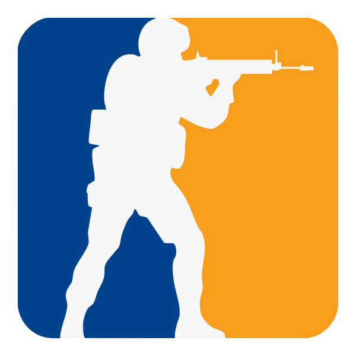
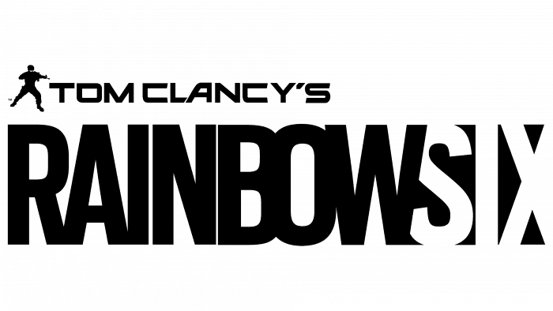
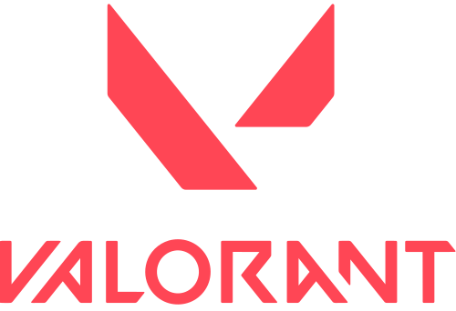

Counter Strike 2

FPS
O CS2 é a evolução do clássico tiro tático focado em cenários competitivos de alta precisão.
Recursos de jogo!
- Computador
- Conexão a internet
- Gratuito
Requisitos Mínimos:
Windows® 10
Processador Intel® Core™ i5 750
8 GB de RAM
Placa GTX 660
Red Dead Redemption 2

Aventura de ação temática do velho oeste em mundo aberto.
Você controla Arthur Morgan, um fora da lei e membro da gangue Van der Linde, enquanto ele enfrenta desafios das forças do governo, gangues rivais e conflitos internos dentro da gangue.
Recursos de jogo!
- Exploração e Mundo Aberto
- Realismo
- Online opcional
- Sobrevivência
Requisitos Mínimos:
Sistema Operacional: Windows 10 64-bit
Processador: Intel Core i5-4670 ou AMD FX-9590
Memória RAM: 8 GB
Placa de Vídeo: NVIDIA GeForce GTX 960 ou AMD Radeon R7 360
DirectX: Versão 12
Armazenamento: 12 GB disponíveis
Tom Clancy's Rainbow Six Siege

FPS
Jogo de tiro em primeira pessoa tático que se destaca pelo seu realismo, estratégia, planejamento e trabalho em equipe.
Recursos de jogo!
- Jogo competitivo
- Online obrigatório
- Planejamento em equipe
- tiro em primeira pessoa
Requisitos Mínimos:
Sistema Operacional: Windows 7, Windows 8.1, Windows 10 (64 bits)
Processador: Intel Core i3-560 ou AMD Phenom II X4 640
Memória: 6 GB de RAM
Placa Gráfica: NVIDIA GeForce GTX 460 ou AMD Radeon HD 6850
Espaço em Disco: 61 GB de espaço livre
Valorant

FPS
Valorant é um jogo tático 5v5, onde o objetivo é armar uma bomba chamada spike ou defender o mesmo para que não armem a spike.
Recursos de jogo!
- Computador
- Acesso a internet
- Computador meia bomba
Requisitos Mínimos:
Sistema Operacional: Windows 10 ou W11 64-bit
Processador (CPU): Intel Core 2 Duo E8400 ou AMD Athlon 200GE
Placa de Vídeo: Intel HD 4000 ou AMD Radeon R5 200
Memória RAM: 4 GB
Armazenamento: pelo menos 10 GB livres
Ranking dos Jogos Mais Bem Avaliados
| Jogo | Nota Média | Métrica de Jogadores (Dados Reais) |
|---|---|---|
| Red Dead Redemption 2 | 9.7 | 85 Milhões (Cópias vendidas) |
| Counter Strike 2 | 8.2 | ~35 a 40 Milhões Mensais (1.5M simultâneos) |
| Valorant | 8.0 | ~29 Milhões Mensais |
| Rainbow Six - Siege | 7.9 | ~15 a 20 Milhões Mensais (120k simultâneos) |